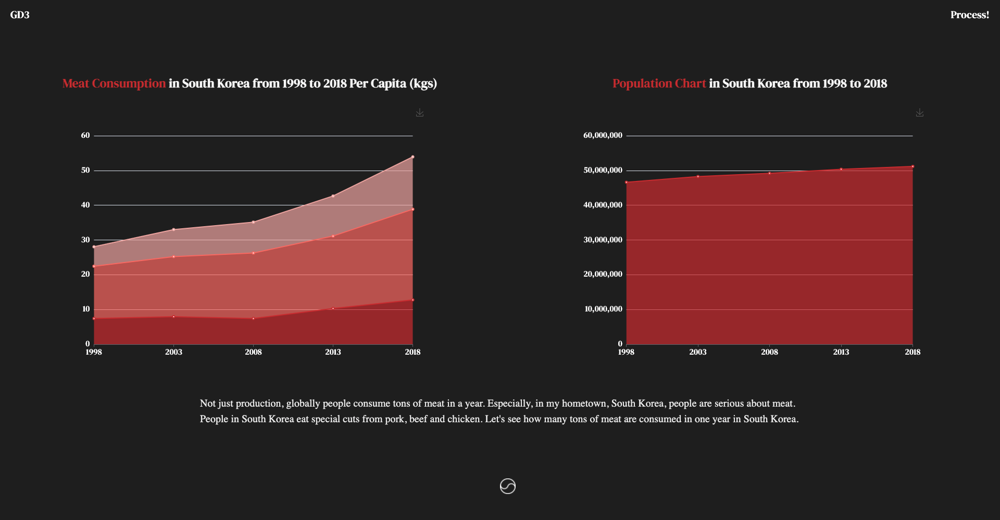

Process
by June Jung in OCADU Graphic Design.
Oct 12, 2021
At first, when I first decided meat as my ingredient, I thought it will be fun if I specialize the data of consumption in certain country like Korea, or Canada. However, since my final goal was to show how consuming or producing meat affect Global Warming. Production of meat has a lot more connections with Global Warming like Green House Gas then consumption of meat. So I decided to focus on production of meat.
My first plan was to show how many meat are produced in a year from 2000 to 2018, since 2018 was the latest chart I can collect. This is the initial site look while I was building.

I started by displaying a fun quote by Mahatma Ghandi. Also for the first number animation, I hard coded everything from the sketch. The rest, I used the library called 'chart.js'. It worked well in the way I thought it would be for the first line chart. However, for the pie chart, I couldn't find a documentation page for sizing and editing the principles of pie chart, so I gave up using chart.js for pie chart. Also for the first animation, I got a feedback that the data itself is not accessible because of the measurement. So I decided to change the way to show the first production data. Lastly, I added an gauge chart which is showing a different amount of GreenHouse Gas Emissions per kg of meat products. I had an initial idea of animation, I was searching for libraries to do this.
This is the chart.js, the library I used and second look of the site.
Chart.js

2nd Process

I found out this amazing library which is based on chartjs and d3 but way more easy. Echart.js is the one that I found for the pie chart and the last gauge chart. I think that library also can fit the mood of this site too, so I chose this one to use for the last two charts. Thus, I needed an animation for the last part, echart was the perfect fit. While finding library was going well, my data flow was kinda terrible. I tried to focus the data in certain country, but it didn't work with the Green House Gas emission part at the end. So I changed my flow from "Global Production - South Korea Production - Man Made Green House Gas - GreenHouse Gas Emission per kg of meat products." to "Global Production - Top 5 Meat Production around the world - Process of meat production - GreenHouse Gas Emission per kg of meat products.". This made more sense to me than before. Lastly, I figured out how to apply animation to my last gauge chart!
This is the echart.js, the library I used and last look of the site.
Echart Apache

3rd Process

Data Story 2 Process
After finishing my first data story, there are few points that I can fix for better user experiences. In the first cow graph, the animation itself is really interesting. However, it is really difficult to actually compare numbers since the number keeps changing. So I think I have to change that function little bit better. I do not want to remove the numbering animation but I was thinking how can I integrate that animation function into the data so that while people can compare the number and see the animation at the same time. What I come out is five different cow icons with five different animtations. Each year, the cow icon grows up seperately, so people are able to compare the size of cow icons and the numbers too.
Cow Animation Before
Cow Animation After
Also, since my website is onepage datastory site, I need a navigation for users, so that users can scroll websites back and forth. I have came up with several ideas, but I decided to divide my website into sections and in the first page, I decided to make a link to a representative icon for each section. So, if the user clicked each representative icon, they can go to the first page of selected section. Also once they scrolled the site, the icons appeared at the bottom to represent what section is current page.
Section Divider
Production Section
South Korea Section
Environment Section
There is meat process section in my site, and honetly, I did not have time to visualize enough those meat process. So while revising, I created different icons like how I created the cow icon at the very first animation chart. I created those icons and put background images in each section, so that while user is reading each section they can integrate those icons and background images together with the contents for each section.
Before
Livestock - New
Slaughter - New

Packaging - New
Delivery - New

Plate - New
For new section, I want to be very personal. And my idea was talking about South Korea, my home country. I wanted to show how South Korean people consume pork much more than other types of meat. Specifically, I wanted to focus on pork belly, and I want to let people to compare population growth last 20 years and consumption graph together so that people can actually see how Korean people love pork, especially pork belly. So I put those two graphs side by side in one page.
New Section (South Korea population and meat consuption)

New Section (Average Yield of primal cuts from the pork)